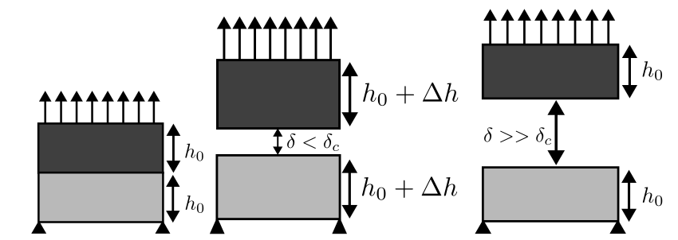
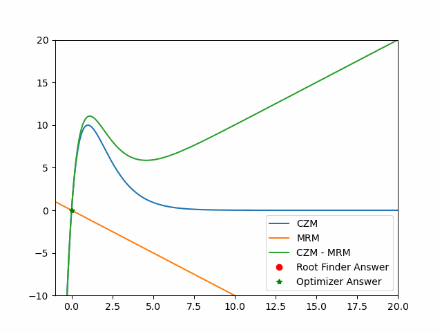
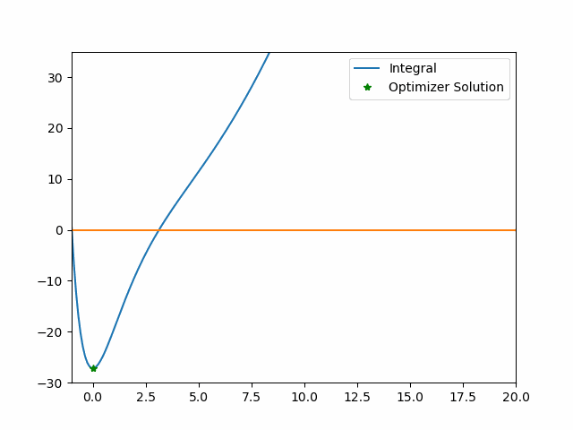

Safer Scientific Computing In Rust

In the CU SPUR program I worked with Professor Jed Brown to investigate the capabilities of the Rust programming language in the field of Scientific Computation through analyzing rootfinding/optimization libraries in C, comparing them to the similar libraries in Rust, and then taking advantage of the FFI to combine the capabilities of current C libraries and the security and semantic clarity of Rust libraries.
To study scientific computation in both languages we analyzed the Cohesive Zone problem which describes how materials respond with adhesives under certain amounts of internal force. In the diagram below we have a simple depicition of the cohesive zone phenomenon. The important note below is that materials don't immediately split apart but slightly deform when pulled apart until the adhesive is unable to hold the materials together creating a "snap-back" effect where the material returns to its original state. The point right before this snap-back is our stable equilibrium we sought to identify in our iterative solving methods.

In our figure below we plot in python a steadily rising material response which represents an increasing force on a material and two different approaches to identifying our equilibrium solution. Since our CZM problem model has an analytic integral we can rewrite our problem as an optimization problem to identify our equilibrium solution, reported as a green star. Another approach is our traditional Newton's root finding method that finds the equilibrium root of the difference between material response and our cohesive zone response. One critical aspect of the graph to note is the "jump" in equilibrium solutions that occur which resembles that "snap-back" of the material once the cohesive zone no longer holds the two materials together. This area also has difficulty converging about the equilibrium solution as the unstable equilibrium is close enough to the equilbrium solution as to report a false equilbrium.
 I worked with two different libraries to model the CZM problem in Rust. My first approach was in pure Rust with the Argmin library. Source code about our model can be found here. Pure Rust has a variety of numerous advantages like traits, generics, and advanced compiler errors to assist end-users in developing rust code in a clearer and easier manner. However, Rust's ecosystem remains immature for scientific computation. As an example, Argmin has an issue open for in-place math traits to allow for computation with \(\Theta(1)\) space complexity.
My second approach to modeling the CZM problem was integrating PETSC-rs with Argmin traits. PETSC-rs is a binding library that provides a Rust interface to the C library PETSC. An example of mixing C and Rust libraries I wrote can be found here. Now while we do have the advantage of the more mature PETSC library we lose out on some of the helpful Rust debugging messages that help users quickly understand a library and now requiring us to dive into traditional C debugging to understand the issues in our code.
As a part of this experience I also gave talks regarding this topic at the Rust Scientific Computing Workshop for 2024 and for CU SPUR. Below I have a video of a talk about Rootfinding in Rust I gave with another Undergraduate Research I worked with, Owen White.